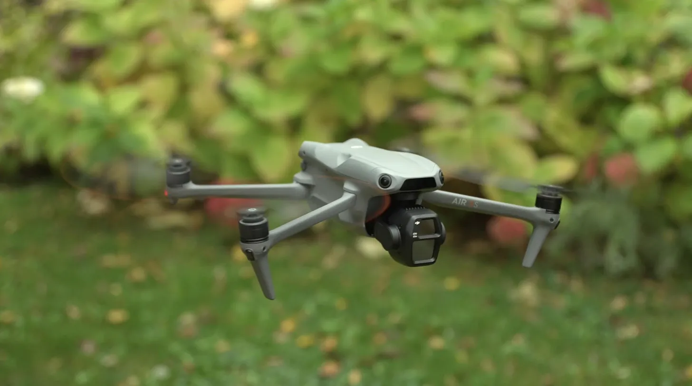
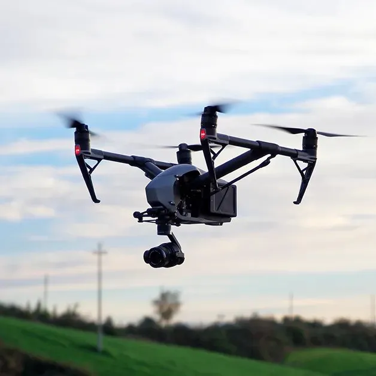
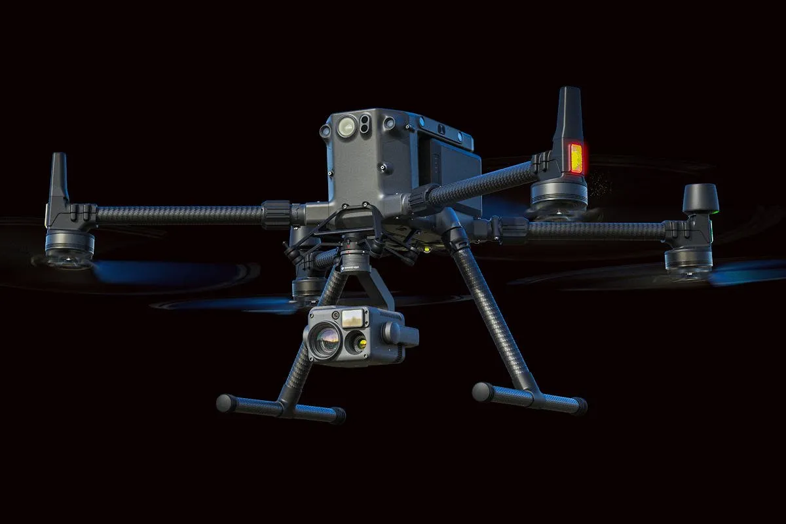
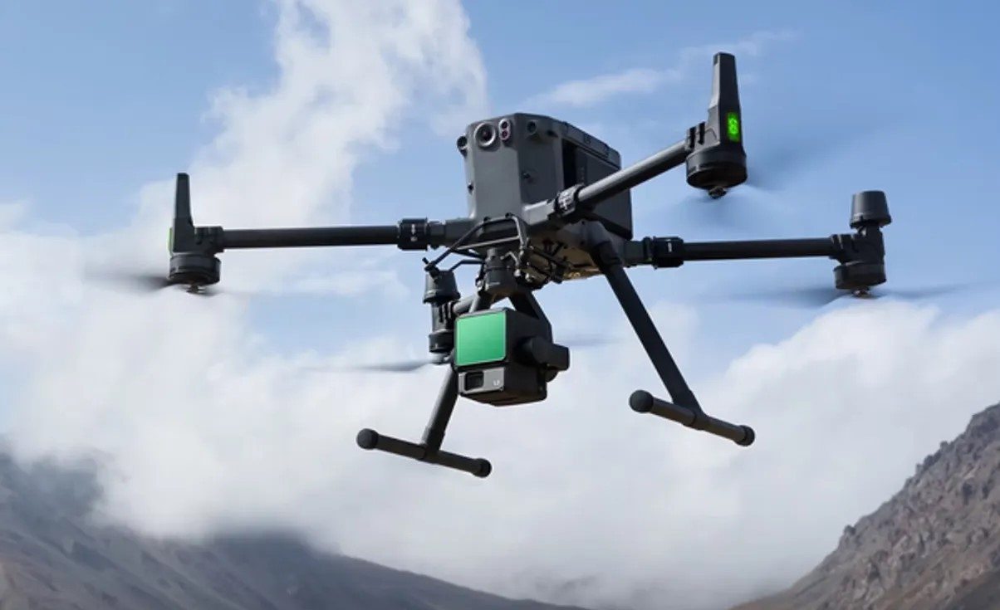

Research
Specialization
Dr. Rahman's field and laboratory work integrates a range of UAV platforms and remote sensing instruments — from compact consumer drones for precision agriculture to heavy-lift industrial systems carrying full LiDAR payloads for forest structural analysis. Below are the key platforms deployed across his research programme.

A versatile, lightweight drone equipped with a 1-inch CMOS sensor and triple-camera system including a medium tele lens. Ideal for rapid field surveys, crop canopy mapping, and preliminary site assessment. Its compact form allows deployment in confined forest margins and agricultural plots with minimal setup time.

A high-performance professional drone with a dual-battery system and interchangeable camera payloads including the Zenmuse X5S and X7 for cinema-quality imaging. Used for detailed canopy photography, multispectral surveys, and high-resolution orthomosaic generation over forest and agricultural study sites.

An industrial-grade hexacopter platform built for demanding research missions. Equipped with RTK positioning for centimetre-level accuracy, it carries the Zenmuse L1 LiDAR payload for 3D forest structural mapping. Used extensively in liana infestation surveys and canopy height modelling across Sal forest study areas in Bangladesh.

The successor to the M300 RTK, offering enhanced flight time, improved transmission range, and support for the Zenmuse L2 LiDAR system with higher point density and accuracy. Deployed for large-scale biomass estimation, land use mapping, and precision agriculture surveys requiring simultaneous LiDAR and multispectral data capture.
Remote Sensing Capabilities
Point cloud classification, canopy height model (CHM) generation, individual tree segmentation, and above-ground biomass estimation from airborne and UAV-LiDAR data.
Vegetation index computation (NDVI, EVI, NDRE, SAVI), crop stress detection, phenological tracking, and yield prediction from UAV multispectral imagery.
Land use / land cover change detection, deforestation mapping, species distribution modelling, and time-series analysis using Sentinel-2, Landsat, and GEDI datasets.
Structure-from-Motion (SfM) 3D reconstruction, orthomosaic production, digital surface model (DSM) generation, and point cloud creation from RGB drone imagery.
Spatial statistics, landscape fragmentation analysis, cellular automata land use modelling, and GIS-based decision support for conservation and agriculture planning.
Random forest classification, artificial neural networks (ANN) for land use prediction, deep learning for tree detection, and regression models for yield and biomass estimation.
Software & Tools
Platforms and software regularly used across research projects: